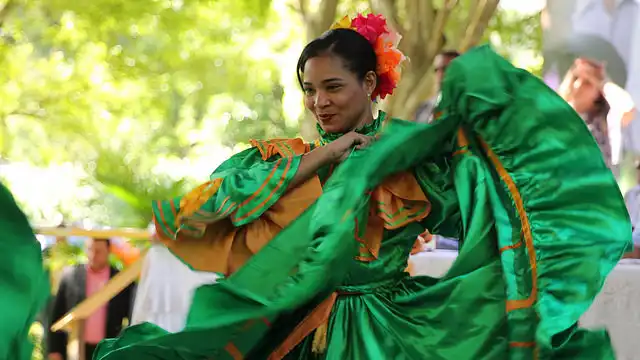
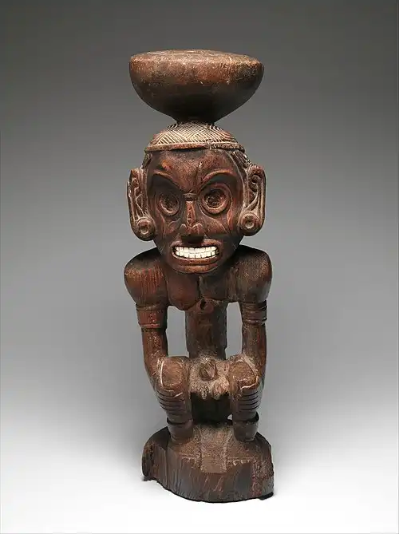
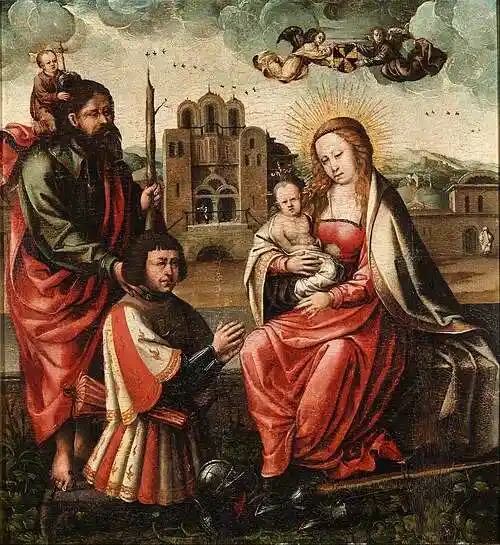
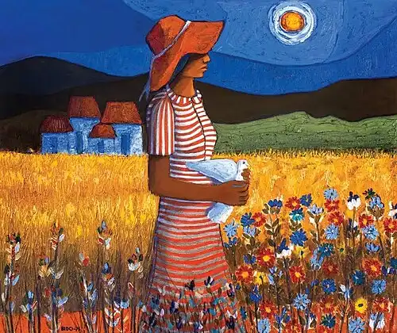
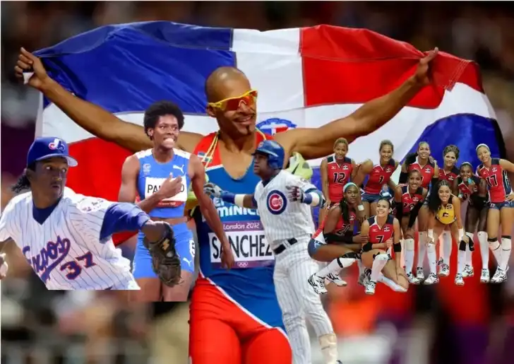

Culture of the Dominican Republic
The Dominican Republic is a country rich in history and culture, a product of the fusion of Spanish, African, and Taino cultures. This fusion is evident in Dominican cultural expressions, most notably in its music and cuisine.
Music
Merengue is a musical and dance style originating in the Dominican Republic in the late 19th century. The basic instrumental structure of the merengue típico ensemble synthesizes the three cultures that make up the idiosyncrasy of Dominican culture. The European influence is represented by the accordion, the African by the tambora, and the Taíno by the güira.
Bachata is another internationally acclaimed musical genre that originated in the Dominican Republic. Although it emerged in the first half of the 20th century, bachata didn't become popular until the 1990s. It is now danced all over the world.

Art
Dominican art comprises all the visual arts and plastic arts made in Dominican Republic. Since ancient times, various groups have inhabited the island of Ayíti/Quisqueya (the indigenous names of the island), or Hispaniola (the name the Spanish gave to the island); the history of the country's art is generally compartmentalized into three periods: pre-Hispanic or aboriginal Amerindian (500 BC to 1500 AD), Hispanic or colonial (1502 to 1821 AD), and the national or Dominican period (1844 to present day).



Sport
Sports in the Dominican Republic are dominated by baseball, considered the national sport and an integral part of its culture, but basketball, volleyball, and soccer are also very popular. The Dominican Republic is a world power in baseball, with numerous players in the MLB, and its athletes also excel in international competitions in other disciplines such as track and field, boxing, and volleyball.
